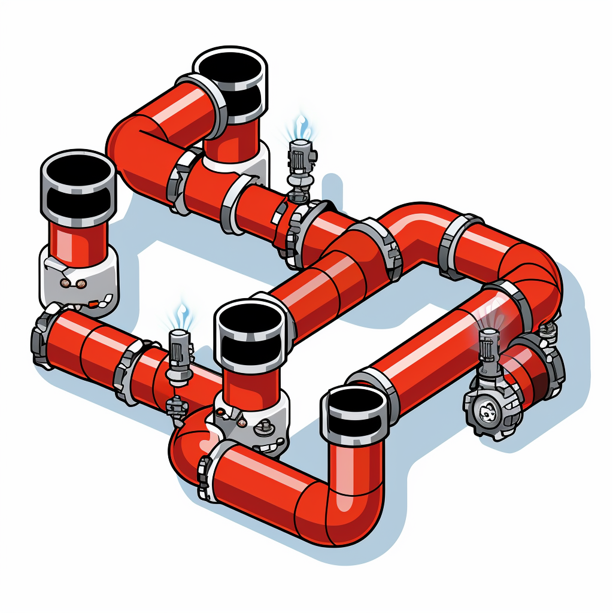

data %>%
filter(group == "xx") %>%
mutate(new.var = old.var + old.var2) %>%
print()Data wrangling and tables
The tidyverse contains two packages with functions used to wrangle data, dplyr and tidyr. On wikipedia we can read that:
Data analysts typically spend the majority of their time in the process of data wrangling compared to the actual analysis of the data.
In the age of data, we need data wrangling
dplyr, verbs of data manipulation (and pipes)
dplyr contains verbs used for data manipulation, such as filtering rows, selecting variables and changing or creating variables. Verbs can be used in a pipe and read as sequential operations:
Take the data then do
filter based on group then do
create a new variable then do
show the data in the console.

The pipe operations are made possible by another package, magrittr. This package contains the forward pipe operator %>%. The forward pipe operator (%>%) can be read as “then do”. The operator takes the object on the left-hand side and puts it as the first argument in the following function.
Translating the “pipe” above from human language to R language using the “tidyverse dialect” looks like this:
Getting started: Load data and packages
We will use the cyclingstudy data from exscidata in our exercises. Load the required components to your session.
Show the code
library(tidyverse) # loads dplyr etc.
library(exscidata) # loads the data-package
data("cyclingstudy")Adding, changing and selecting variables - mutate and select
Mutate can help you create new variables (or overwrite existing once). In the cycling data set there is a variable called VO2.max, this variable is expressed in absolute units (ml min-1), however, we might want to express it as relative units (ml kg-1 min-1).
cyclingstudy %>%
mutate(rel.vo2max = VO2.max / weight.T1) %>%
print()The mutate function creates new variables (or overwrite existing) in a flexible way. Here we simply use division. Other mathematical operators can similarly be used (+, -, *, etc.).
Notice the print() function in the end of the pipe. This is used to display the results of any manipulations done in the pipe. Notice also that our new variable is not listed. We might need to select a sub-set of variables to get a better overview. We will do this using the select function.
cyclingstudy %>%
mutate(rel.vo2max = VO2.max / weight.T1) %>%
select(subject, group, timepoint, age, height.T1, weight.T1, VO2.max, rel.vo2max) %>%
print()The select function takes variable names as “unquoted” names. We can also select a range of columns using the syntax <from>:<to> where <from> is the first column you would like to select and <to> would be the last. Subsequently the above pipe can be re-written as
cyclingstudy %>%
mutate(rel.vo2max = VO2.max / weight.T1) %>%
select(subject:weight.T1, VO2.max, rel.vo2max) %>%
print()select can also be used to re-name variables. Simpler variable names for weight, height and relative VO2max could be weight, height, vo2max.kg.
cyclingstudy %>%
mutate(rel.vo2max = VO2.max / weight.T1) %>%
select(subject:age, height = height.T1, weight = weight.T1, VO2.max,vo2max.kg = rel.vo2max) %>%
print()Storing your results as a data frame in the environment
When you have selected and mutated variables you might want to keep the new data frame in your environment. Do this by assigning the whole pipe to a new object.
cyc.subset <- cyclingstudy %>%
mutate(rel.vo2max = VO2.max / weight.T1) %>%
select(subject:age, height = height.T1, weight = weight.T1, VO2.max,vo2max.kg = rel.vo2max) %>%
print()Select rows based on condition and sort them - filter and arrange
Filtering is used to select specific observations (rows) of a data set. We filter based on specific conditions such as:
- All values bigger than X
- All values less than Y
- All observations than contain A, B or C in variable V.
The above examples must be translated to formal expressions.
Comparisons
An expression that make comparisons can be
x < y→ x less than yx > y→ x greater than yx <= y→ x less or equal to yx >= y→ x greater or equal to yx == y→ x exactly equal to yx != y→ x not exactly equal to y
In the filter function these expressions give either TRUE or FALSE. If TRUE the rows are included in the filtered data frame.
We can see the mechanism behind filtering by creating a vector of TRUE and FALSE based on an expression. Let’s say that we want to see which rows has weight.T1 greater than 75.
cyclingstudy$weight.T1 > 75 [1] TRUE FALSE TRUE TRUE TRUE TRUE TRUE TRUE TRUE TRUE FALSE TRUE
[13] TRUE TRUE TRUE TRUE TRUE TRUE TRUE TRUE TRUE FALSE TRUE TRUE
[25] TRUE TRUE TRUE FALSE TRUE TRUE FALSE TRUE TRUE FALSE TRUE TRUE
[37] TRUE TRUE TRUE TRUE TRUE FALSE TRUE TRUE NA TRUE TRUE FALSE
[49] NA TRUE FALSE NA TRUE FALSE TRUE TRUE TRUE TRUE TRUE TRUE
[61] TRUE FALSE TRUE TRUE NA TRUE TRUE FALSE TRUE FALSE FALSE FALSE
[73] TRUE FALSE TRUE TRUE TRUE TRUE TRUE TRUEWe can see that the first row returns a TRUE while the second row returns FALSE.
Using the filter function, we just add the expression as an argument in the function and all the rows that comes up TRUE will remain.
cyclingstudy %>%
filter(weight.T1 > 75) %>%
print()# A tibble: 60 × 101
subject group timepoint age height.T1 weight.T1 sj.max cmj.max lac.125
<dbl> <chr> <chr> <dbl> <dbl> <dbl> <dbl> <dbl> <dbl>
1 1 INCR pre 33 183 80.3 31.0 35.0 1.5
2 3 INCR pre 39 193 98.1 26.8 28.8 1.17
3 4 DECR pre 37 175 79.2 29.2 30.8 0.88
4 5 DECR pre 31 176 88 31.2 25.8 1.06
5 6 INCR pre 33 168 79.6 34.2 35.3 1.27
6 7 MIX pre 42 180 77.6 30.1 33.0 0.85
7 8 MIX pre 26 179 75.5 32.8 33.2 0.93
8 9 MIX pre 41 185 82.4 22.7 22.4 1.48
9 10 INCR pre 35 187 75.6 29.7 31.1 0.93
10 13 DECR pre 41 183 76 34.3 36 1.67
# ℹ 50 more rows
# ℹ 92 more variables: lac.175 <dbl>, lac.225 <dbl>, lac.250 <dbl>,
# lac.275 <dbl>, lac.300 <dbl>, lac.325 <dbl>, lac.350 <dbl>, lac.375 <dbl>,
# VO2.125 <dbl>, VO2.175 <dbl>, VO2.225 <dbl>, VO2.250 <dbl>, VO2.275 <dbl>,
# VO2.300 <dbl>, VO2.325 <dbl>, VO2.350 <dbl>, VO2.375 <dbl>, VCO2.125 <dbl>,
# VCO2.175 <dbl>, VCO2.225 <dbl>, VCO2.250 <dbl>, VCO2.275 <dbl>,
# VCO2.300 <dbl>, VCO2.325 <dbl>, VCO2.350 <dbl>, VCO2.375 <dbl>, …Logical operators
Logical operators similarly creates TRUE or FALSE as the basis of filtering operations. These can be used in combination with comparisons.
! x→ NOT xx & y→ x and yx | y→ x or yis.na(x)→ returns TRUE if x isNA
We might want to keep all rows with weight.T1 greater than 80 that are also from the group INCR. This can be solved with an AND operator (&).
#| echo: true
cyclingstudy %>%
filter(weight.T1 > 80 & group == "INCR") %>%
print()# A tibble: 9 × 101
subject group timepoint age height.T1 weight.T1 sj.max cmj.max lac.125
<dbl> <chr> <chr> <dbl> <dbl> <dbl> <dbl> <dbl> <dbl>
1 1 INCR pre 33 183 80.3 31.0 35.0 1.5
2 3 INCR pre 39 193 98.1 26.8 28.8 1.17
3 20 INCR pre 42 180 82.3 32.5 32.2 2.26
4 3 INCR meso1 39 NA 101. 26.0 26.5 0.72
5 20 INCR meso1 42 NA 82.5 30.2 30.6 0.96
6 3 INCR meso2 39 NA 99.2 25.4 26.8 0.5
7 20 INCR meso2 42 NA 81.1 29.6 29.8 1.53
8 3 INCR meso3 39 NA 99.2 27.1 27.0 0.77
9 20 INCR meso3 43 NA 81.5 30.0 30.9 1.77
# ℹ 92 more variables: lac.175 <dbl>, lac.225 <dbl>, lac.250 <dbl>,
# lac.275 <dbl>, lac.300 <dbl>, lac.325 <dbl>, lac.350 <dbl>, lac.375 <dbl>,
# VO2.125 <dbl>, VO2.175 <dbl>, VO2.225 <dbl>, VO2.250 <dbl>, VO2.275 <dbl>,
# VO2.300 <dbl>, VO2.325 <dbl>, VO2.350 <dbl>, VO2.375 <dbl>, VCO2.125 <dbl>,
# VCO2.175 <dbl>, VCO2.225 <dbl>, VCO2.250 <dbl>, VCO2.275 <dbl>,
# VCO2.300 <dbl>, VCO2.325 <dbl>, VCO2.350 <dbl>, VCO2.375 <dbl>,
# VE.125 <dbl>, VE.175 <dbl>, VE.225 <dbl>, VE.250 <dbl>, VE.275 <dbl>, …We can similarly use OR (|) to select either weight greater than 80 or group INCR.
#| echo: true
cyclingstudy %>%
filter(weight.T1 > 80 | group == "INCR") %>%
print()# A tibble: 46 × 101
subject group timepoint age height.T1 weight.T1 sj.max cmj.max lac.125
<dbl> <chr> <chr> <dbl> <dbl> <dbl> <dbl> <dbl> <dbl>
1 1 INCR pre 33 183 80.3 31.0 35.0 1.5
2 3 INCR pre 39 193 98.1 26.8 28.8 1.17
3 5 DECR pre 31 176 88 31.2 25.8 1.06
4 6 INCR pre 33 168 79.6 34.2 35.3 1.27
5 9 MIX pre 41 185 82.4 22.7 22.4 1.48
6 10 INCR pre 35 187 75.6 29.7 31.1 0.93
7 14 MIX pre 35 183 81.3 27.6 30.0 1.13
8 15 INCR pre 34 178 75.1 33.5 32.4 0.8
9 16 INCR pre 27 178 77.8 32.9 33.7 0.94
10 18 DECR pre 41 186 105. 33.5 33.7 1.75
# ℹ 36 more rows
# ℹ 92 more variables: lac.175 <dbl>, lac.225 <dbl>, lac.250 <dbl>,
# lac.275 <dbl>, lac.300 <dbl>, lac.325 <dbl>, lac.350 <dbl>, lac.375 <dbl>,
# VO2.125 <dbl>, VO2.175 <dbl>, VO2.225 <dbl>, VO2.250 <dbl>, VO2.275 <dbl>,
# VO2.300 <dbl>, VO2.325 <dbl>, VO2.350 <dbl>, VO2.375 <dbl>, VCO2.125 <dbl>,
# VCO2.175 <dbl>, VCO2.225 <dbl>, VCO2.250 <dbl>, VCO2.275 <dbl>,
# VCO2.300 <dbl>, VCO2.325 <dbl>, VCO2.350 <dbl>, VCO2.375 <dbl>, …Notice that there are rows containing weights less than 80 from the INCR group.
Any logical statement can also be negated with ! indication NOT. This means we will get a vector of TRUE for any expression previously being FALSE. Notice the extra parentheses below.
#| echo: true
cyclingstudy %>%
filter(!(weight.T1 > 80 & group == "INCR")) %>%
print()# A tibble: 71 × 101
subject group timepoint age height.T1 weight.T1 sj.max cmj.max lac.125
<dbl> <chr> <chr> <dbl> <dbl> <dbl> <dbl> <dbl> <dbl>
1 2 DECR pre 32 174 71.4 31.6 33.8 1.19
2 4 DECR pre 37 175 79.2 29.2 30.8 0.88
3 5 DECR pre 31 176 88 31.2 25.8 1.06
4 6 INCR pre 33 168 79.6 34.2 35.3 1.27
5 7 MIX pre 42 180 77.6 30.1 33.0 0.85
6 8 MIX pre 26 179 75.5 32.8 33.2 0.93
7 9 MIX pre 41 185 82.4 22.7 22.4 1.48
8 10 INCR pre 35 187 75.6 29.7 31.1 0.93
9 11 MIX pre 34 168 55.8 33.2 30.8 0.62
10 13 DECR pre 41 183 76 34.3 36 1.67
# ℹ 61 more rows
# ℹ 92 more variables: lac.175 <dbl>, lac.225 <dbl>, lac.250 <dbl>,
# lac.275 <dbl>, lac.300 <dbl>, lac.325 <dbl>, lac.350 <dbl>, lac.375 <dbl>,
# VO2.125 <dbl>, VO2.175 <dbl>, VO2.225 <dbl>, VO2.250 <dbl>, VO2.275 <dbl>,
# VO2.300 <dbl>, VO2.325 <dbl>, VO2.350 <dbl>, VO2.375 <dbl>, VCO2.125 <dbl>,
# VCO2.175 <dbl>, VCO2.225 <dbl>, VCO2.250 <dbl>, VCO2.275 <dbl>,
# VCO2.300 <dbl>, VCO2.325 <dbl>, VCO2.350 <dbl>, VCO2.375 <dbl>, …The dplyr function filter also accepts multiple arguments separated with a comma. This is equal to adding conditions with the AND operator. Example:
#| echo: true
cyclingstudy %>%
filter(weight.T1 > 80,
group == "INCR",
timepoint == "pre",
age > 35) %>%
print()# A tibble: 2 × 101
subject group timepoint age height.T1 weight.T1 sj.max cmj.max lac.125
<dbl> <chr> <chr> <dbl> <dbl> <dbl> <dbl> <dbl> <dbl>
1 3 INCR pre 39 193 98.1 26.8 28.8 1.17
2 20 INCR pre 42 180 82.3 32.5 32.2 2.26
# ℹ 92 more variables: lac.175 <dbl>, lac.225 <dbl>, lac.250 <dbl>,
# lac.275 <dbl>, lac.300 <dbl>, lac.325 <dbl>, lac.350 <dbl>, lac.375 <dbl>,
# VO2.125 <dbl>, VO2.175 <dbl>, VO2.225 <dbl>, VO2.250 <dbl>, VO2.275 <dbl>,
# VO2.300 <dbl>, VO2.325 <dbl>, VO2.350 <dbl>, VO2.375 <dbl>, VCO2.125 <dbl>,
# VCO2.175 <dbl>, VCO2.225 <dbl>, VCO2.250 <dbl>, VCO2.275 <dbl>,
# VCO2.300 <dbl>, VCO2.325 <dbl>, VCO2.350 <dbl>, VCO2.375 <dbl>,
# VE.125 <dbl>, VE.175 <dbl>, VE.225 <dbl>, VE.250 <dbl>, VE.275 <dbl>, …Finally, dplyr comes with two convenient functions to find values between and near.
between() lets you select observations between two values:
#| echo: true
cyclingstudy %>%
filter( between(age, 31, 42)) %>%
print()# A tibble: 62 × 101
subject group timepoint age height.T1 weight.T1 sj.max cmj.max lac.125
<dbl> <chr> <chr> <dbl> <dbl> <dbl> <dbl> <dbl> <dbl>
1 1 INCR pre 33 183 80.3 31.0 35.0 1.5
2 2 DECR pre 32 174 71.4 31.6 33.8 1.19
3 3 INCR pre 39 193 98.1 26.8 28.8 1.17
4 4 DECR pre 37 175 79.2 29.2 30.8 0.88
5 5 DECR pre 31 176 88 31.2 25.8 1.06
6 6 INCR pre 33 168 79.6 34.2 35.3 1.27
7 7 MIX pre 42 180 77.6 30.1 33.0 0.85
8 9 MIX pre 41 185 82.4 22.7 22.4 1.48
9 10 INCR pre 35 187 75.6 29.7 31.1 0.93
10 11 MIX pre 34 168 55.8 33.2 30.8 0.62
# ℹ 52 more rows
# ℹ 92 more variables: lac.175 <dbl>, lac.225 <dbl>, lac.250 <dbl>,
# lac.275 <dbl>, lac.300 <dbl>, lac.325 <dbl>, lac.350 <dbl>, lac.375 <dbl>,
# VO2.125 <dbl>, VO2.175 <dbl>, VO2.225 <dbl>, VO2.250 <dbl>, VO2.275 <dbl>,
# VO2.300 <dbl>, VO2.325 <dbl>, VO2.350 <dbl>, VO2.375 <dbl>, VCO2.125 <dbl>,
# VCO2.175 <dbl>, VCO2.225 <dbl>, VCO2.250 <dbl>, VCO2.275 <dbl>,
# VCO2.300 <dbl>, VCO2.325 <dbl>, VCO2.350 <dbl>, VCO2.375 <dbl>, …near lets you select values that are approximately equal to your specified value with some specified tolerance:
#| echo: true
cyclingstudy %>%
filter( near(age, 40, tol = 2)) %>%
print()# A tibble: 18 × 101
subject group timepoint age height.T1 weight.T1 sj.max cmj.max lac.125
<dbl> <chr> <chr> <dbl> <dbl> <dbl> <dbl> <dbl> <dbl>
1 3 INCR pre 39 193 98.1 26.8 28.8 1.17
2 9 MIX pre 41 185 82.4 22.7 22.4 1.48
3 13 DECR pre 41 183 76 34.3 36 1.67
4 18 DECR pre 41 186 105. 33.5 33.7 1.75
5 21 DECR pre 40 175 82.3 35.2 32.6 0.68
6 3 INCR meso1 39 NA 101. 26.0 26.5 0.72
7 9 MIX meso1 41 NA 82.3 23.3 22.4 0.96
8 13 DECR meso1 41 NA 76 34.4 33.8 1.25
9 18 DECR meso1 41 NA 103 33.2 34.1 1.51
10 21 DECR meso1 40 NA 81.1 33.6 34.5 0.6
11 3 INCR meso2 39 NA 99.2 25.4 26.8 0.5
12 9 MIX meso2 41 NA NA NA NA NA
13 13 DECR meso2 41 NA NA NA NA NA
14 18 DECR meso2 41 NA 101. 32.1 33.6 0.5
15 21 DECR meso2 40 NA 81.7 32.4 31.5 0.5
16 3 INCR meso3 39 NA 99.2 27.1 27.0 0.77
17 9 MIX meso3 41 NA 78.7 25.0 25.6 1.25
18 18 DECR meso3 41 NA 101. 32.1 34.7 1.94
# ℹ 92 more variables: lac.175 <dbl>, lac.225 <dbl>, lac.250 <dbl>,
# lac.275 <dbl>, lac.300 <dbl>, lac.325 <dbl>, lac.350 <dbl>, lac.375 <dbl>,
# VO2.125 <dbl>, VO2.175 <dbl>, VO2.225 <dbl>, VO2.250 <dbl>, VO2.275 <dbl>,
# VO2.300 <dbl>, VO2.325 <dbl>, VO2.350 <dbl>, VO2.375 <dbl>, VCO2.125 <dbl>,
# VCO2.175 <dbl>, VCO2.225 <dbl>, VCO2.250 <dbl>, VCO2.275 <dbl>,
# VCO2.300 <dbl>, VCO2.325 <dbl>, VCO2.350 <dbl>, VCO2.375 <dbl>,
# VE.125 <dbl>, VE.175 <dbl>, VE.225 <dbl>, VE.250 <dbl>, VE.275 <dbl>, …Notice however that the default tolerance is a very small number (1.4901161^{-8}).
arrange sorts the rows of a data frame
Sorting a data frame does not change the observations, it only determines how the data frame is printed or passed to other functions.
If we want to sort our data in cyclingstudy based on VO2.max we would
cyclingstudy %>%
1 select(subject, group, VO2.max) %>%
2 arrange(VO2.max)
cyclingstudy %>%
select(subject, group, VO2.max) %>%
3 arrange(desc(VO2.max))
cyclingstudy %>%
select(subject, group, VO2.max) %>%
arrange(desc(group) )- 1
- Selects a subset of variables for display
- 2
-
Arrange based on the variable
VO2.max, smallest values on top - 3
- Arrange with largest value on top
Notice the use of the desc function. In this example it is equivalent to using arrange(-VO2.max), in other situations, like with factors, desc will work as expected but not -.
Group and summarise data - group_by and summarise
A super power of dplyr is its ability to group and summarize data. The group_by function creates a grouped data frame suitable for summaries per group. In the cyclingstudy data set we have three groups that we might want to describe using some summary function.
Examples of summary functions in R are:
mean()→ computes arithmetic meanmedian()→ computes the mediansd()→ computes the standard deviation from the meanIQR()→ returns the inter-quartile rangemin()andmax()→ gives the minimum and maximum values from a vectorquantile()→ sample quantiles from the smallest (probs = 0) to largest (probs = 1) values.
All the above functions comes with the optional argument of na.rm = TRUE. This can be read as remove missing values (NA). If there are missing values (NA) and na.rm = FALSE (the default), the calculations will return NA. This is inconvenient but can often work as check of your assumptions.
In addition to the summaries above that are generic for base R, dplyr provides you with a number of great functions to…
n()→ count the number of observations in each groupn_distinct()→ return the number of unique values from a vector for each group
In practice a grouped summary may look like this:
cyclingstudy %>%
group_by(group) %>%
summarise(mean.vo2max = mean(VO2.max, na.rm = TRUE))Results from the above code includes multiple data points from each participant. The variable describing time-points can be added to the grouping.
cyclingstudy %>%
group_by(group, timepoint) %>%
summarise(mean.vo2max = mean(VO2.max, na.rm = TRUE))Multiple summary functions can be added to the summarise() function where each adds a new variable to the result data frame.
cyclingstudy %>%
group_by(group, timepoint) %>%
summarise(mean.vo2max = mean(VO2.max, na.rm = TRUE),
sd.vo2max = sd(VO2.max, na.rm = TRUE))Pivoting using pivot_longer and pivot_wider from the tidyr package
Data can be described as being in long form and wide form. The long form data is tidy in the sense that all columns are distinct variables.

There are examples of wide data sets as part of the cycling data set. Using only the timepoint == pre values and columns corresponding to lactate values from the graded exercise test we have an example of wide data as the columns lac.125, lac.175, lac.225, etc., contains lactate values from different exercise intensities. This means that a separate variable (watt or exercise intensity) is combined in each column of lactate values.
cyclingstudy %>%
filter(timepoint == "pre") %>%
dplyr::select(subject, group, lac.125:lac.375) %>%
print()# A tibble: 20 × 11
subject group lac.125 lac.175 lac.225 lac.250 lac.275 lac.300 lac.325 lac.350
<dbl> <chr> <dbl> <dbl> <dbl> <dbl> <dbl> <dbl> <dbl> <dbl>
1 1 INCR 1.5 1.86 2.38 3.54 6.21 NA NA NA
2 2 DECR 1.19 1.49 2.34 3.21 5.33 NA NA NA
3 3 INCR 1.17 1.52 1.22 1.54 2.04 3.32 4.72 NA
4 4 DECR 0.88 0.99 2.13 3.25 NA 6.15 NA NA
5 5 DECR 1.06 1.41 1.9 2.04 3.04 3.59 4.73 NA
6 6 INCR 1.27 1.73 3.21 4.83 NA NA NA NA
7 7 MIX 0.85 0.84 1.16 1.71 3.33 6.25 NA NA
8 8 MIX 0.93 1.34 1.94 NA 3.71 7.29 NA NA
9 9 MIX 1.48 1.17 1.95 NA 3.24 6.21 NA NA
10 10 INCR 0.93 0.87 0.86 0.92 1.2 1.69 2.6 4.69
11 11 MIX 0.62 1.22 2.85 5.86 9.87 NA NA NA
12 13 DECR 1.67 1.81 2.78 4.25 6.87 NA NA NA
13 14 MIX 1.13 1.33 2.74 3.97 NA NA NA NA
14 15 INCR 0.8 1.12 1.43 NA 2.4 3.77 6.3 NA
15 16 INCR 0.94 1.18 1.89 2.83 5.33 NA NA NA
16 17 MIX 1.54 1.62 2.7 4.1 NA NA NA NA
17 18 DECR 1.75 2.08 2.99 4.22 NA NA NA NA
18 19 DECR 1.23 2.51 4.65 NA NA NA NA NA
19 20 INCR 2.26 2.05 3.19 5.17 NA NA NA NA
20 21 DECR 0.68 0.89 1.98 3.18 5.57 NA NA NA
# ℹ 1 more variable: lac.375 <dbl>Using pivot_longer we can change this data into a long format. Pivot wider needs information on the new variable names for values and names. Names are the column names that will form a variable and values are the values contained in the cells of the old variables. We also need to specify what columns to make longer, notice that I select variables <from>:<to>.
cyclingstudy %>%
filter(timepoint == "pre") %>%
dplyr::select(subject, group, lac.125:lac.375) %>%
pivot_longer(names_to = "watt",
values_to = "lactate",
cols = lac.125:lac.375) %>%
print()# A tibble: 180 × 4
subject group watt lactate
<dbl> <chr> <chr> <dbl>
1 1 INCR lac.125 1.5
2 1 INCR lac.175 1.86
3 1 INCR lac.225 2.38
4 1 INCR lac.250 3.54
5 1 INCR lac.275 6.21
6 1 INCR lac.300 NA
7 1 INCR lac.325 NA
8 1 INCR lac.350 NA
9 1 INCR lac.375 NA
10 2 DECR lac.125 1.19
# ℹ 170 more rowspivot_wider makes it easy to remove prefix and fix the data type of the names variable. Below we specify to remove lac. from all names and convert the new variable to numeric data.
# eval: false
cyclingstudy %>%
filter(timepoint == "pre") %>%
dplyr::select(subject, group, lac.125:lac.375) %>%
pivot_longer(names_to = "watt",
values_to = "lactate",
cols = lac.125:lac.375,
names_prefix = "lac.",
names_transform = list(watt = as.numeric)) %>%
print()# A tibble: 180 × 4
subject group watt lactate
<dbl> <chr> <dbl> <dbl>
1 1 INCR 125 1.5
2 1 INCR 175 1.86
3 1 INCR 225 2.38
4 1 INCR 250 3.54
5 1 INCR 275 6.21
6 1 INCR 300 NA
7 1 INCR 325 NA
8 1 INCR 350 NA
9 1 INCR 375 NA
10 2 DECR 125 1.19
# ℹ 170 more rowsA data set can contain multiple “groups” of variables in a wide format. In the cycling data set variables such as HF.* and lac.* are variables that are collected at different intensities (watt, indicated with *). We would like to make the data set tidy, each column contains a variable and each row is an observation.
In the example below we create a long data set using two variables of interest, lactate (lac.*) and heart rate (HF.*) each collected over multiple intensities. Using a special name .value we can tell pivot_longer that there are additional information in the column names that should be regarded as names. We also need to a separator that separates our .value with the watt column, in this case the separator is a period/point (.). Note that R evaluates a single . as special character matching any single character. To use the period character as a separator we must “escape” it using either \\. or [.], this removes its special meaning.
# eval: false
cyclingstudy %>%
1 filter(timepoint == "pre") %>%
select(subject, group, lac.125:lac.375, HF.125:HF.375) %>%
2 pivot_longer(cols = !c(subject, group),
3 names_to = c(".value", "watt"),
4 names_sep = "[.]") %>%
print()- 1
- Filter the data set an select variables
- 2
-
Using
pivot_wider, first specify what columns to “make longer”. - 3
-
Use the special
.valueto indicate that each variable name contains information that should be used in creating new variables - 4
-
Indicate what character to split the variables on, in this case we need to “escape” the period using
[.].
# A tibble: 180 × 5
subject group watt lac HF
<dbl> <chr> <chr> <dbl> <dbl>
1 1 INCR 125 1.5 109
2 1 INCR 175 1.86 124
3 1 INCR 225 2.38 139
4 1 INCR 250 3.54 152
5 1 INCR 275 6.21 167
6 1 INCR 300 NA NA
7 1 INCR 325 NA NA
8 1 INCR 350 NA NA
9 1 INCR 375 NA NA
10 2 DECR 125 1.19 121
# ℹ 170 more rowsThe next step: Create a neat report
We will use a table generator to create the table. See next part of this workshop here